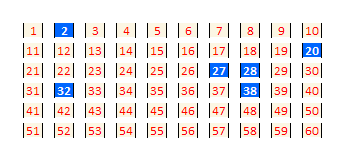

O volante da Mega Sena consiste em um jogo de 60 números à disposição dos apostadores. Cada apostador pode apostar de 6 a 15 números do volante.

A Mega Sena da Virada é uma aposta especial em que prêmio principal é pago para quem acertar os 6 números sorteados dentre os 60 disponíveis no volante. Ainda é possível ganhar ao acertar 4 ou 5 números, onde a premiação é dividida proporcionalmente conforme a seguinte distribuição:
- 62% - primeira faixa - seis acertos (sena);
- 19% - segunda faixa - cinco acertos (quina);
- 19% - terceira faixa - quatro acertos (quadra).
Os ganhadores na mesma faixa dividem o prêmio igualmente entre si.
A sua tarefa é escrever um programa em C chamado megasena.c que tem como entrada
várias apostas e imprime na saída padrão os valores dos prêmios a serem recebidos
pelos ganhadores.
Entrada
A entrada é composta por várias linhas. A primeira linha da entrada contém um inteiro $m$ e um número de ponto flutuante $n$ que indicam, respectivamente, o número de apostadores e o valor total do prêmio. Em seguida são dadas $m$ matrizes binárias de dimensão 6x10, onde 1s (uns) indicam os números marcados pelo apostador correspondente; e 0s (zeros) indicam o contrário. A última linha contém os 6 números sorteados.
Restrições:
- 5 ≤ $m$ ≤ 1000
- 1e6 ≤ $n$ ≤ 3e9
Exemplo de entrada
No exemplo a seguir, a primeira matriz dada como entrada (linhas 2-7) corresponde ao volante da figura acima.
5 1000000.00
0 1 0 0 0 0 0 0 0 0
0 0 0 0 0 0 0 0 0 1
0 0 0 0 0 0 1 1 0 0
0 1 0 0 0 0 0 1 0 0
0 0 0 0 0 0 0 0 0 0
0 0 0 0 0 0 0 0 0 0
0 1 0 0 0 0 0 0 0 0
0 0 0 0 0 0 0 0 0 1
0 0 0 0 0 0 1 1 0 0
0 0 0 0 0 0 0 1 0 0
1 0 0 1 1 0 0 0 0 0
0 0 0 0 0 0 0 0 0 0
0 1 0 0 0 0 0 0 1 0
0 1 0 0 0 1 0 0 0 1
0 0 0 0 0 1 1 0 0 0
0 0 1 0 0 0 0 1 0 0
1 0 0 0 0 1 0 0 0 0
0 0 0 0 0 0 0 0 0 0
0 1 0 0 0 0 0 0 0 0
0 0 0 0 0 0 0 0 0 1
0 0 0 0 0 0 0 1 0 0
0 0 0 0 0 0 0 1 0 0
0 0 0 0 0 0 0 0 0 0
0 0 0 1 0 0 0 0 0 1
0 1 0 0 0 0 0 0 0 0
0 0 0 0 0 0 0 0 0 1
0 0 0 0 0 0 1 1 0 0
0 0 0 0 0 0 0 1 0 0
0 0 0 0 0 0 0 0 0 0
0 0 0 0 1 0 0 0 0 0
28 27 20 2 45 38Saída
A saída do seu programa deverá apresentar $m$ linhas, onde a i-ésima linha contém o valor prêmio a receber para o i-ésimo apostador, conforme a distribuição do valor destinado ao pagamento dos prêmios. O valor do prêmio terá precisão de duas casas decimais.
Exemplo de saída
95000.00
620000.00
95000.00
95000.00
95000.00